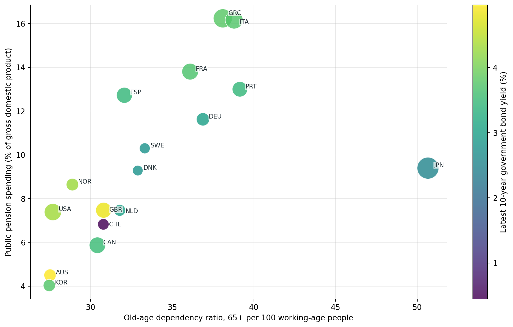
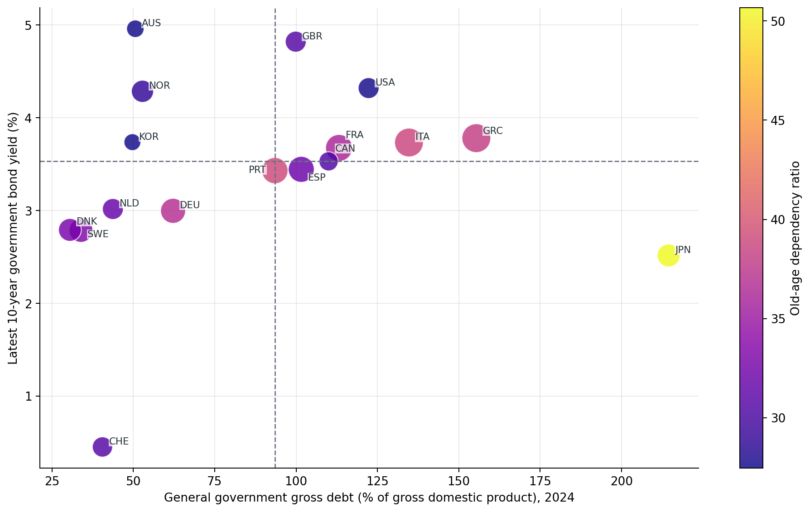
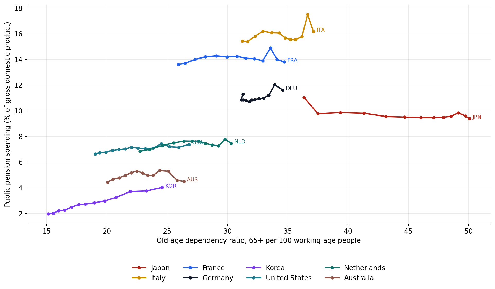
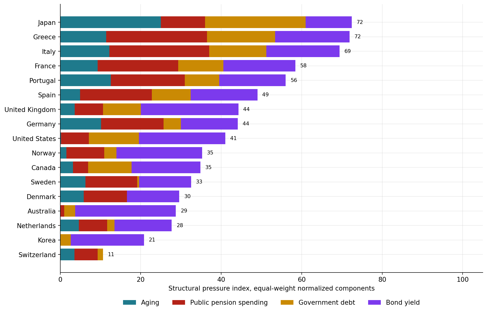

Global Pension, Aging, Government Debt, and Bond Yield Analysis
A country-level structural comparison of old-age dependency, public pension spending, general government gross debt, and long-term government bond yields.
Background
Public pension systems sit at the intersection of demographics and government finance. A country can have high old-age dependency but low bond yields, or high public pension spending but moderate government debt. Looking at one indicator alone can hide the real comparison.
Objective
The objective is to compare countries across four linked dimensions: old-age dependency, public pension spending, general government gross debt, and long-term government bond yields. The output is a structural dashboard, not a pension forecast or investment recommendation.
Method
- Public pension spending uses Organisation for Economic Co-operation and Development public and private social expenditure data for old-age programmes, public expenditure source, measured as a percentage of gross domestic product.
- Old-age dependency uses the World Bank indicator for people aged 65 and older relative to the working-age population.
- Government debt uses International Monetary Fund World Economic Outlook DataMapper general government gross debt as a percentage of gross domestic product for 2024.
- Bond yields use Federal Reserve Bank of St. Louis series sourced from Organisation for Economic Co-operation and Development long-term government bond yields.
- The structural pressure index normalizes the four indicators from low to high within this country set and gives each component equal weight.
Key Findings
- Japan ranks highest in the simple structural pressure index because multiple dimensions are high at the same time.
- Japan combines the highest old-age dependency and very high gross government debt, but its latest 10-year government bond yield is still below many peers.
- Italy combines high public pension spending, high debt, and a higher bond yield than Japan, which makes its position look structurally tighter on the market-rate view.
- Korea currently has much lower public pension spending than older European systems, but its old-age dependency has been rising quickly.
Figures




Country Snapshot
| Country | Old-age dependency | Public pension spending | Pension spending year | Government gross debt | Latest 10-year bond yield | Index |
|---|---|---|---|---|---|---|
| Japan | 50.7 | 9.4% | 2022 | 214.5% | 2.5% | 72 |
| Greece | 38.1 | 16.2% | 2021 | 155.4% | 3.8% | 72 |
| Italy | 38.8 | 16.2% | 2021 | 134.7% | 3.7% | 69 |
| France | 36.1 | 13.8% | 2022 | 113.2% | 3.7% | 58 |
| Portugal | 39.1 | 13.0% | 2021 | 93.5% | 3.4% | 56 |
| Spain | 32.1 | 12.7% | 2021 | 101.6% | 3.4% | 49 |
| United Kingdom | 30.8 | 7.5% | 2022 | 99.9% | 4.8% | 44 |
| Germany | 36.9 | 11.6% | 2021 | 62.2% | 3.0% | 44 |
| United States | 27.7 | 7.4% | 2023 | 122.3% | 4.3% | 41 |
| Norway | 28.9 | 8.6% | 2021 | 52.8% | 4.3% | 35 |
| Canada | 30.4 | 5.9% | 2022 | 110.0% | 3.5% | 35 |
| Sweden | 33.3 | 10.3% | 2021 | 33.9% | 2.8% | 33 |
| Denmark | 32.9 | 9.3% | 2021 | 30.5% | 2.8% | 30 |
| Australia | 27.5 | 4.5% | 2022 | 50.6% | 5.0% | 29 |
| Netherlands | 31.8 | 7.5% | 2021 | 43.7% | 3.0% | 28 |
| Korea | 27.5 | 4.0% | 2022 | 49.7% | 3.7% | 21 |
| Switzerland | 30.8 | 6.8% | 2021 | 40.5% | 0.5% | 11 |
Data Quality Checks
| Check | Value | Note |
|---|---|---|
| countries_configured | 17 | Countries requested in the first-pass comparison set. |
| countries_with_complete_snapshot | 17 | Countries with non-missing aging, pension spending, debt, and yield fields. |
| public_pension_spending_rows | 212 | Organisation for Economic Co-operation and Development public old-age pension spending observations. |
| old_age_dependency_rows | 255 | World Bank old-age dependency observations for selected countries. |
| government_debt_rows | 780 | International Monetary Fund general government gross debt observations for selected countries. |
| bond_yield_countries | 17 | Countries with a fetched long-term government bond yield series. |
| source_checked_date | 2026-05-26 | Date the local script retrieved public source data. |
Discussion
The main result is that high debt is not the same thing as high market pressure, and high aging is not the same thing as high current pension spending. Japan and Italy are useful contrasts: both are old and heavily indebted, but their bond yield environments are different. Korea is a different case: the current public pension spending line is lower, but the demographic path is moving quickly.
Limitations
- The index is descriptive and depends on the selected countries and selected indicators.
- Pension spending years are not identical across countries, so the latest-country snapshot mixes latest available pension years.
- Long-term government bond yields are latest market observations, not average interest cost on the debt stock.
- Gross government debt ignores public assets and other balance-sheet differences.
- The analysis does not model tax capacity, productivity growth, migration, retirement age, benefit formulas, or private household wealth.
Sources
- Organisation for Economic Co-operation and Development pension spending indicator
- World Bank old-age dependency ratio data endpoint
- International Monetary Fund World Economic Outlook DataMapper
- Organisation for Economic Co-operation and Development long-term interest rates indicator
- Federal Reserve Bank of St. Louis economic data service